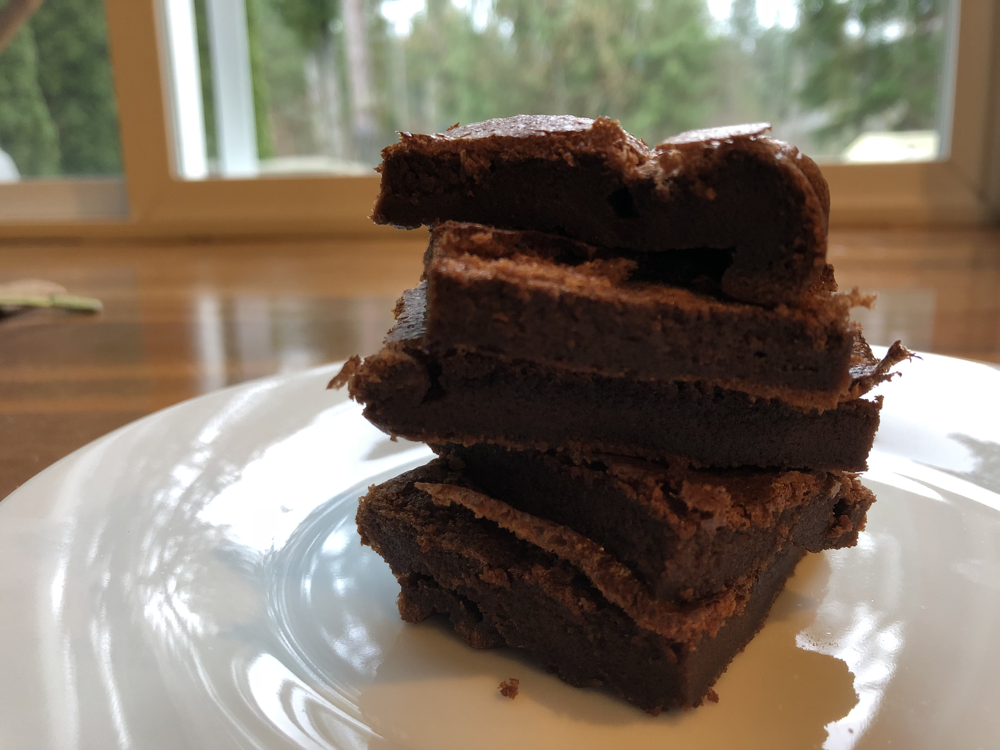

EASY GLUTEN FREE
NUTELLA BROWNIES

Delicious Sorbet for the Hottest Days!
Easy as to exist, you will only need eggs and Nutella to make the easiest,
softest flourless brownies ever! Soft, fudgy, and totally gluten free!
INGREDIENTS
- Cooking Spray
- Parchment Paper
- One cup chocolate-hazelnut spread (such as Nutella, or other you like the most)
- Four eggs
STEPS
- Preheat the oven to 350°F (a bit more than 175 °C), grease an 8x8-inch baking dish with cooking spray and line with parchment paper
- Place Nutella in a microwave-safe bowl, microwave on high until soft and creamy (more or less one minute, stirring every 15 seconds)
- Whisk eggs in a bowl with an electric mixer until pale and creamy (about seven minutes)
- Mix in Nutella and whisk on low speed until well combined (more or less 2 minutes)
- Pour mixture into the prepared baking dish
- Bake in the preheated oven until top is dry and edges have started to pull away from the sides of the pan (something about 25 minutes, may very)
- IMPORTANT: Let it cool completely before slicing
-
Nutrition Facts
-
Per Serving:
53 calories; protein 3.8g; carbohydrates 15.3g; fat 8.9g; cholesterol 65.5mg; sodium 49mg